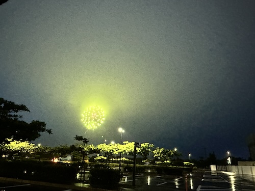

雨の中の花火 - 2024/05/21 雨
地域の治安を守るため、モンスターハントに出かけなければなりません。
いつもは弓使いのRIE隊員と徒歩で周辺をパトロールするのですが、この日は悪天候。
仕方が無いので車でジンオウガの群れを狩りにでかけました。ちなみに次男のTSUBASAは北海道利尻島の治安を守っています。 するとパトロール中、宜野湾海浜公園方面から閃光と爆発音が。
するとパトロール中、宜野湾海浜公園方面から閃光と爆発音が。
一瞬、
でもRIE隊員はあまり興味が無かったのか、海浜公園内のモンスター・ハントと素材集めに夢中で、
偶発的に出会った雨の日の花火。
すごく趣があったので皆さまもぜひ雨の日に海浜公園らへんで花火遭遇を試みてみて下さい。
なんで、いつ上がるのかは不明ですが。。。
いつもは弓使いのRIE隊員と徒歩で周辺をパトロールするのですが、この日は悪天候。
仕方が無いので車でジンオウガの群れを狩りにでかけました。ちなみに次男のTSUBASAは北海道利尻島の治安を守っています。
一瞬、
ついに雷を操るジンオウガが現実世界に顕現したのか？
と、厨二病的な想いにふけりかけましたが、空を見上げると鮮やかな花火が上がっていました。
結構雨が激しく降っていたので、こんな雨の中でも花火ってあげられるんだと感動しながら、海浜公園駐車場まで入ってしばらく花火を鑑賞。でもRIE隊員はあまり興味が無かったのか、海浜公園内のモンスター・ハントと素材集めに夢中で、
「もっと噴水側に寄って！」
とか、運転手の私に激しく指令を飛ばしていました。。。偶発的に出会った雨の日の花火。
すごく趣があったので皆さまもぜひ雨の日に海浜公園らへんで花火遭遇を試みてみて下さい。
なんで、いつ上がるのかは不明ですが。。。